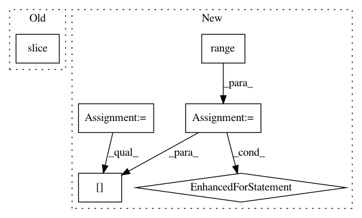

7d8c14a3b812fbd652dedb63c25c67df77661e01,pymc3/step_methods/metropolis.py,BinaryMetropolis,astep,#BinaryMetropolis#Any#Any#,218
Before Change
elif self.gibbs == "random":
self.index = np.random.randint(0, self.dim)
else:
self.index = slice(None) // select all
mask = np.zeros(self.dim, dtype=np.bool8)
mask[self.index] = True
After Change
def astep(self, q0, logp):
if (self.gibbs == "sequential") or (self.gibbs == "random"):
order = list(range(self.dim))
if self.gibbs == "random":
np.random.shuffle(order)
q = copy(q0)
for idx in order:
q[idx] = True - q[idx]
q = metrop_select(logp(q) - logp(q0), q, q0)
q_new = q
else:
// Convert adaptive_scale_factor to a jump probability
p_jump = 1. - .5 ** self.scaling
In pattern: SUPERPATTERN
Frequency: 3
Non-data size: 6
Instances
Project Name: pymc-devs/pymc3
Commit Name: 7d8c14a3b812fbd652dedb63c25c67df77661e01
Time: 2016-02-16
Author: thomas.wiecki@gmail.com
File Name: pymc3/step_methods/metropolis.py
Class Name: BinaryMetropolis
Method Name: astep
Project Name: AllenCellModeling/pytorch_fnet
Commit Name: 2db4628918bba182c02fca614dbb3b82cca90bd3
Time: 2017-11-10
Author: chek.o@outlook.com
File Name: fnet/data/transforms.py
Class Name: Cropper
Method Name: __call__
Project Name: tensorly/tensorly
Commit Name: b1f90776bd41b6319818f65aba5536b81e8b5c8d
Time: 2019-04-23
Author: jean.kossaifi@gmail.com
File Name: tensorly/tenalg/n_mode_product.py
Class Name:
Method Name: unfolding_dot_khatri_rao